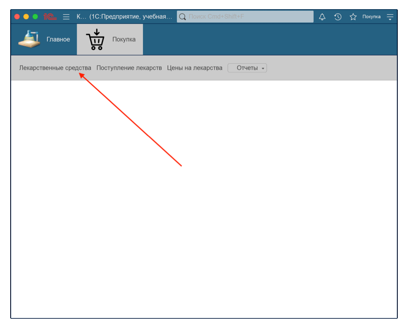
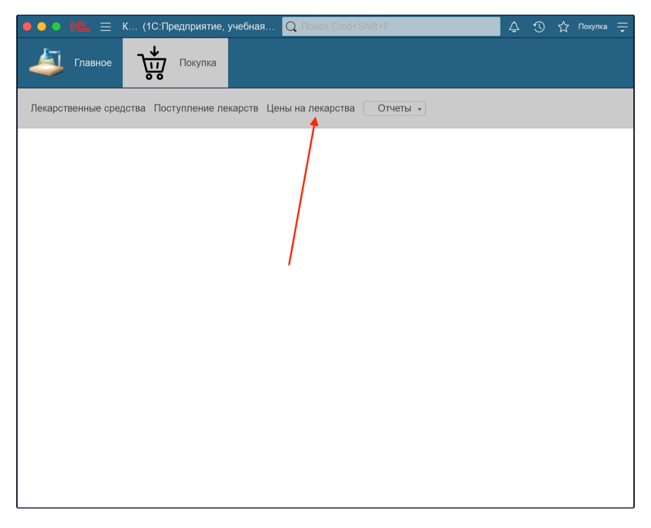
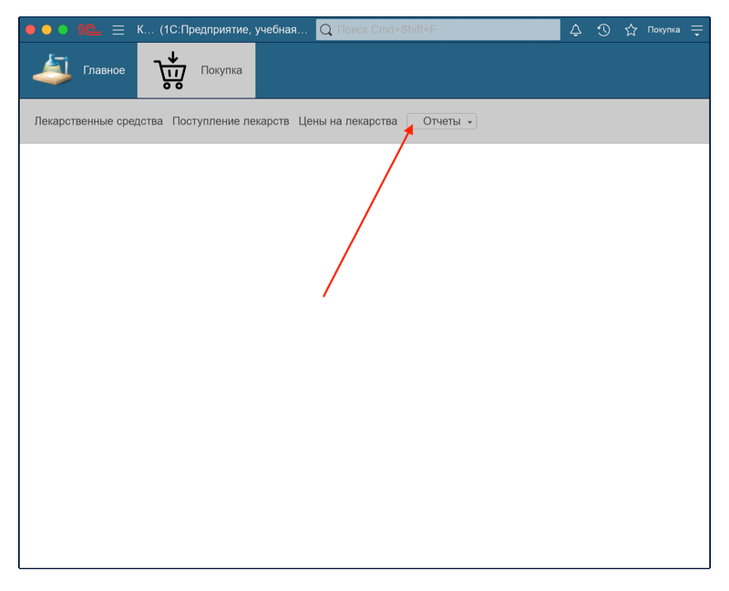
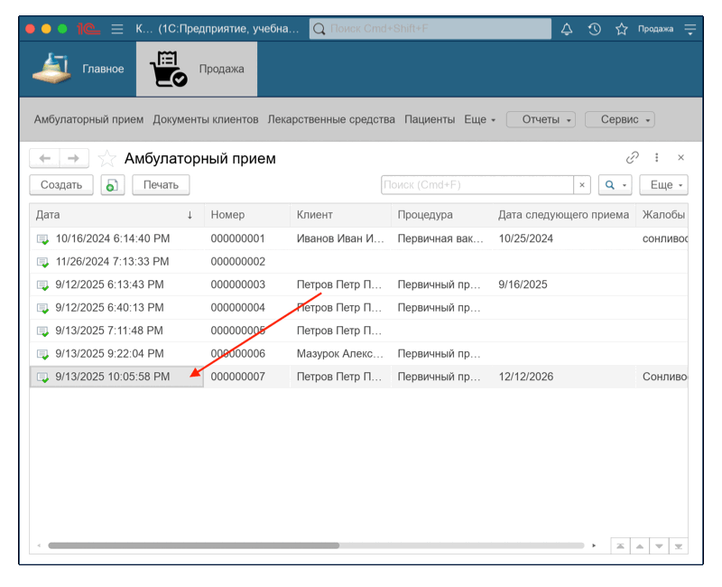
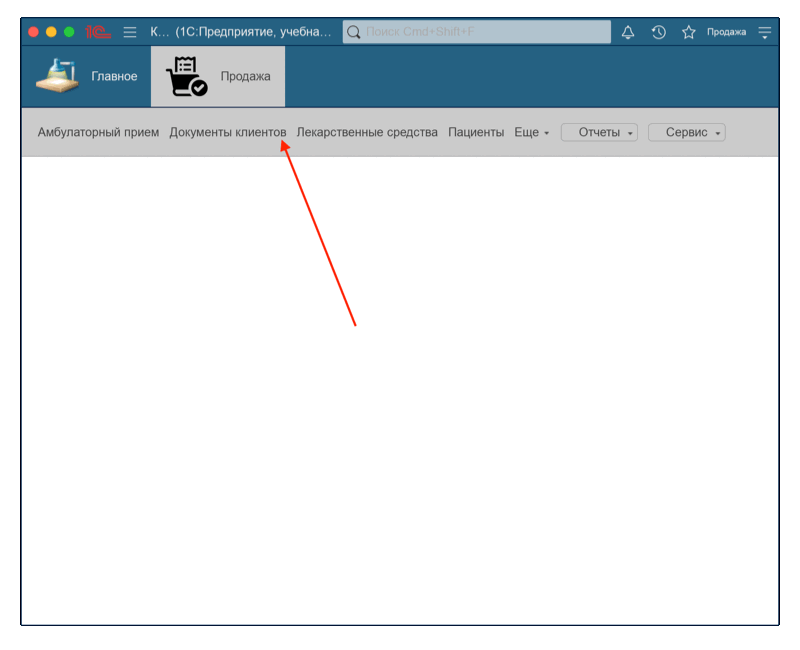
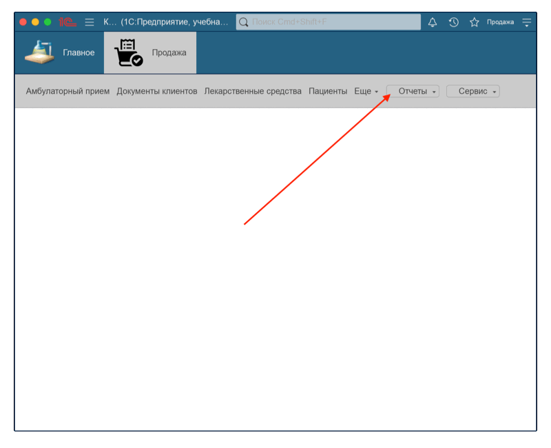

Данное руководство предназначено для пользователей конфигурации 1С для ветеринарной клиники.
В документе описаны доступные роли (Администратор, Покупка, Продажа), а также функционал каждой из них.
Здесь вы найдете инструкции по работе с основными разделами программы и ответы на часто задаваемые вопросы (FAQ).
При запуске программы открывается окно выбора Роли. Выбор осуществляется через выпадающий список. Доступны следующие роли: Админ, Покупка, Продажа. Ниже расположено поле ввода пароля.
Далее рассмотрим функционал каждой роли отдельно.
Администратору доступен полный функционал программы. Он может работать с разделами: Покупка, Продажа, Прочее.
После входа открывается Главное меню. В верхней панели находятся четыре раздела: Главное, Покупка, Продажа, Прочее. Ещё выше расположены разделы Уведомления, История и кнопка выхода из программы.
Вкладка Покупка содержит следующие разделы:
Доступна таблица с описанием товара, его кодом и ценой. Существующие записи можно редактировать. Для добавления нового нажмите Создать. При создании нового лекарства или редактировании существующего можно добавить файл картинки.
Содержит список поступлений. Чтобы просмотреть подробности, двойным кликом выберите нужное поступление. Отобразится информация: номер поступления, дата, название препарата, количество, цена и сумма.
Содержит список производств. Для добавления нового нажмите Создать. При создании надо указать номенклатуру, единицу измерения и количество.
Доступна таблица с текущими ценами на товары.
При нажатии кнопки Отчёты доступны пункты Остатки лекарств и Остатки номенклатуры отчет. В открывшемся окне можно сгенерировать отчёт с информацией об остатках препаратов.
Вкладка Продажа содержит следующие разделы:
Таблица с информацией о приёмах: дата, номер, клиент, процедура, дата следующего приёма, жалобы, стоимость, скидка, итоговая стоимость, рассрочка. Записи можно редактировать и добавлять новые.
Содержит описание документов о продаже лекарств клиентам.
Доступна таблица с описанием товара, его кодом и ценой. Существующие записи можно редактировать. Для добавления нового нажмите Создать. При создании нового лекарства или редактировании существующего можно добавить файл картинки.
Таблица с данными пациентов: ФИО, код, дата рождения, вид животного, кличка, уровень клиента. Записи можно редактировать или добавлять новые.
Содержит список производств. Для добавления нового нажмите Создать. При создании надо указать номенклатуру, единицу измерения и количество.
Раздел содержит информацию о продажах.
Таблица с перечнем процедур: название, код, стоимость.
Список из 4 уровней, которые можно присваивать клиентам.
Доступны оптовая и розничная рассрочка. Для каждой указаны процент и срок.
Таблица с описательными характеристиками лекарств: форма выпуска, размер упаковки и др.
Таблица с информацией о ценах.
Позволяет формировать отчёты Продажи лекарств (информация о клиентах, купленных препаратах, количестве и сумме) и Остатки номенклатуры отчет (информация о номенклатуре и количестве остатоков)
Позволяет добавить нового врача в систему через соответствующее окно.
Содержит разделы: Документы клиентов, Единицы измерения, Значение характеристик, Значения свойств лекарств, Номенклатура ,Свойства лекарств, Характеристики лекарств и кнопку Сервис.
Перейдите во вкладку Лекарственные средства, нажмите Создать, укажите название товара, цену и код (опционально), затем нажмите Записать и закрыть.
Вкладка Лекарственные средства, двойной клик по нужной записи, внесите изменения и нажмите Записать и закрыть.

Вкладка Поступление лекарств, двойной клик по поступлению позволяет просмотреть подробности.

Вкладка Поступление лекарств, нажмите Создать, укажите номер и дату поступления. Используйте кнопку Добавить, затем Показать все, выберите препарат и нажмите Выбрать. Для добавления дополнительных препаратов повторите шаги. После заполнения нажмите Провести и закрыть. 
Вкладка Цены на лекарства, двойной клик по препарату для просмотра деталей.

Нажмите Создать, укажите период и цену, выберите препарат через Показать все → Выбрать, затем нажмите Записать и закрыть. 
Кнопка Отчёты → Остатки лекарств, нажмите Сформировать для генерации таблицы.

Для сохранения или печати отчетов необходимо сначала их сформировать (см. раздел Формирование отчетов). После формирования доступны кнопки Сохранить, Печать и Предварительный просмотр. Выберите нужное действие. 
Для просмотра истории, нажмите на кнопку с часами, расположенную в верхнем правом углу. Откроется окно, где можно посмотреть последние действия. Указан тип действия, время и дата. Для того, чтобы закрыть историю, нажмите на крестик справа от поля поиска.

Для завершения работы выберите Покупка → Завершить работу (Выйти).

Вкладка Амбулаторный приём, нажмите Создать, укажите дату, номер, стоимость, скидку, жалобы, дату следующего приёма. Добавьте клиента через Показать все или Создать. Заполните поля Процедура и Рассрочка, затем нажмите Провести и закрыть.

Для печати: выберите запись, нажмите Печать, затем иконку принтера.
Для сохранения: выберите запись, нажмите Печать, затем иконку сохранения.
Двойной клик по записи, внесите изменения и нажмите Провести и закрыть. 
Создание новых записей через вкладку → Создать → заполнение полей → Записать и закрыть.
Изменение существующих записей через двойной клик → редактирование → Записать и закрыть.

Вкладка Продажа лекарств, нажмите Создать, заполните поля с клиентом, датой и номером продажи. Добавьте препараты через кнопку Добавить и заполните поля, затем нажмите Записать.

Создание новых записей через вкладку → Создать → заполнение → Записать и закрыть.
Изменение существующих через двойной клик → редактирование → Записать и закрыть.

Кнопка Отчёты → Продажи лекарств, нажмите Сформировать. Для печати или сохранения используйте кнопки справа: Сохранить, Печать, Предварительный просмотр. 
Кнопка Сервис → Врач, внесите данные и нажмите Записать и закрыть.

Кнопка с часами → просмотр действий → закрыть крестиком.
Завершение работы: Продажа → Завершить работу (Выйти).
Иногда пользователи не видят все доступные вкладки. Для решения этой проблемы кнопка можно растянуть окно программы или открыть его в полноэкранном режиме. Также просмотреть не поместившиеся вкладки можно нажав на кнопку "Еще".
Документ можно открыть двойным щелчком, внести изменения и нажать Записать и закрыть. Если документ уже проведён, используйте кнопку Отмена проведения, затем внесите исправления.
Убедитесь, что запись была проведена и сохранена. Иногда требуется обновление вкладки или повторный вход в систему.
Используйте кнопку Создать в соответствующем разделе. После заполнения полей нажмите Записать и закрыть, новый элемент появится в списке.
Проверьте выбранный период и фильтры. Убедитесь, что данные за этот период действительно существуют.
Руководство подготовил: Пальчук Герман